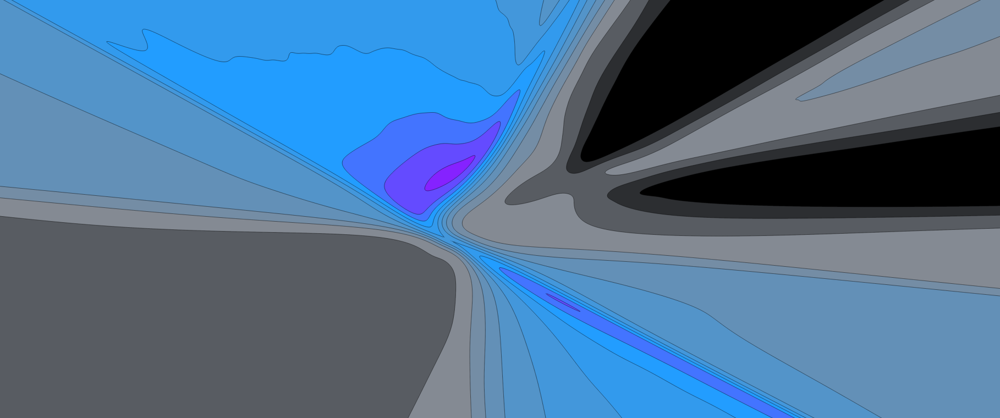

What is a Loss Landscape? A visual exploration
In this post I will explain what a loss landscape is and how it relates to training a model to make predictions. Creating these visualizations after reading Visualizing the loss landscape of neural networks helped me understand that paper and appreciate the complexity of training neural networks. Hopefully this post will give you some useful intuitions about machine learning and allow you to thoroughly enjoy Javier Ideami's nice loss landscape images.
In my first post we saw how models make predictions, but skipped over how they are trained to make predictions. If you haven't read that post yet, I recommend that you do. This post will make use of the same models and datasets.
What is Loss?
When a model makes predictions, we need some way to quantify how good those predictions are.
What's wrong with accuracy? It's a common and familiar metric. If a model makes 10 predictions and got 9 of them correct, that would be an accuracy of 90%. But what if the desired predictions are either 0 or 1 (with a decision boundary of 0.5)? For a desired value of 1, one model might predict 0.6 and another might be 0.99. Both models would be correct (above 0.5) for that example, but in order to train, there needs to be some way to say that the latter makes a better prediction.
We need a loss function that will measure how close the desired output $y$ and the model output $\hat y$ are to each other. As the model output gets closer to the desired output, the loss should decrease and reach 0 when the values match. The process of changing a model to minimize the loss is called optimization. In machine learning this is typically done with some variant of stochastic gradient descent (SGD) and won't be the focus of this post.
Figure 2 shows how the loss changes as the predictions get further away from the desired outputs. For example, if the desired output was 0 and the prediction was 2, that would result in a loss value of 4. The average of the loss for each point point in the dataset gives the loss for the whole dataset. For this post the loss values used to construct the landscapes will be the average loss for the whole dataset.
Models as points
In post 1 we looked at the inputs as points. We also saw notation for a model as a function that took in points and parameters (values for weights and biases) to produce predictions: $\textbf{P} = f(\textbf{D}, \theta)$. Let's conceptualize the parameters θ as a point in $n$ dimensional space, where $n$ is the number of parameters in the model.
Model 1, a matrix multiplication of the dataset and a $2 \times 1$ matrix, can be represented as the point $(q, s)$.
From figures 3 through 6 we can see how the loss decreases from the start to the end of training. The initial model could have been any point in 2D space, the parameter space, and if trained properly should always end up at a lower point on the loss landscape than it started. Figures 4, 5, and 6 all show the same data in slightly different ways.
Why train? Can't we pick the point with the lowest loss in the landscape? Calculating the loss for each point in figure 4 isn't free. For this model and dataset, it takes slightly more time than optimizing with SGD. As models get larger, searching for an optima in this way quickly becomes intractable.
How do we visualize larger models? Model 2 from visualizing NN predictions had an additional parameter $b$, so if we wanted to plot all of the parameters and the loss, $(q, s, b, \mathcal{L})$ we would need 4 dimensions. But model 3 has 13 parameters, and models used on real problems can have thousands to hundreds of millions of parameters. Since we can't visualize every dimension of those loss landscapes, we'll need a way to visualize sections of the landscape that might be interesting.
Slicing the loss landscape
In this post we'll see 1D, 2D, and 3D slices of loss landscapes. We've seen models as 2D points in figures 3 through 6, which can be considered 2D slices. To understand that, let's look at a 1D slice of that model's landscape for the Diagonal dataset.
In order to calculate the parameter values θ for each point along a slice, we'll take a weighted average (linear interpolation) of the parameters for model A, $θ_A$, and Model B, $θ_B$.
$$ \theta = (1-\alpha)θ_A + (\alpha)θ_B $$When $\alpha = 0 \rightarrow \theta = θ_A$ and when $\alpha = 1 \rightarrow \theta = θ_B$
In figure 7, the points along the curved arc show the parameters of the model as the optimizer updates them in order to minimize the loss. The pink dot traces the line shown in figure 8. We could have chosen any slice, but if we're interested in the model's behavior while training, a slice showing the start and end point seems useful.
Visualizing More Complex Landscapes
We've seen how to take a 1D slice of a 2D parameter space. Now we'll look at 2D and 3D slices of 13 dimensional parameter spaces for Model 3, a 2 layer neural network.
To make a 2D slice, we'll need 2 directions in space to define the slice. If we chose a slice parallel to the first slice, the resulting landscape would be misleadingly symmetrical and unintuitive, since we will visualize each slice on perpendicular axes.
Having slices perpendicular to each other will allow us to visualize more interesting features of the loss landscape. For the figures below I've used principal component analysis (PCA) to pick good slices. The result of PCA over the set of parameters at each training step gives vectors (directions in space) that indicate the major movements of the model during training. Figure 10 shows slices chosen with the help of PCA.
In figure 12 we see 2 low points, the lowest is where the model ended up after training. The other appears to be what is referred to as a local minimum, a point where any slight change in the model results in a higher loss. This point turns out to not actually be a local minimum. It just so happens that this slice misses points near there that would have a lower loss. This can be confirmed by starting the model at that point and verifying that training results in an even lower loss. The animations below show how some apparent local minima get lower as the 2D slice moves.
The takeaway from figure 13 and 14 is that 2D slices of loss landscapes may be misleading. By extension, we should assume that 3D slices for models with 13 parameters or more are probably not perfect representations of the model's whole landscape.
So why do we care? Most applications of machine learning use loss minimization as the primary objective of training and a large portion of research on ML can be seen as finding algorithms that are better at navigating loss landscapes or finding models with loss landscapes that are easier to navigate. Visualizing the loss landscape of neural networks showed that adding skip connections can make the loss landscape smoother, and therefore easier to navigate. On Large-Batch Training for Deep Learning: Generalization Gap and Sharp Minima showed that training with smaller batches of data results in the models ending up in low points where the surrounding bowl is much wider, which correlates with a model performing well on unseen data. These aren't proofs of why these tools and procedures result in better models, but they are useful relationships to understand.
In summary
- We defined loss as the result of a loss function on a model's output and the desired output.
- We looked at model parameters as points.
- We created loss landscapes by including the loss value for each point in the parameter space.
- Lastly, we created low dimensional slices to visualize landscapes for complex models.
Beyond Loss
Understanding and manipulating the loss landscape is not everything in ML. Another major area of research is understanding if the data and loss functions appropriately represent a useful objective. Meaning, does a model with 0 loss get 100% accuracy? More importantly, how does such a model handle new data, and does it generate outputs that are useful, fair, and safe?
Feel free to reach out with any questions or comments on the tweet below and follow me @tuckerkirven to see announcements about other posts like this.